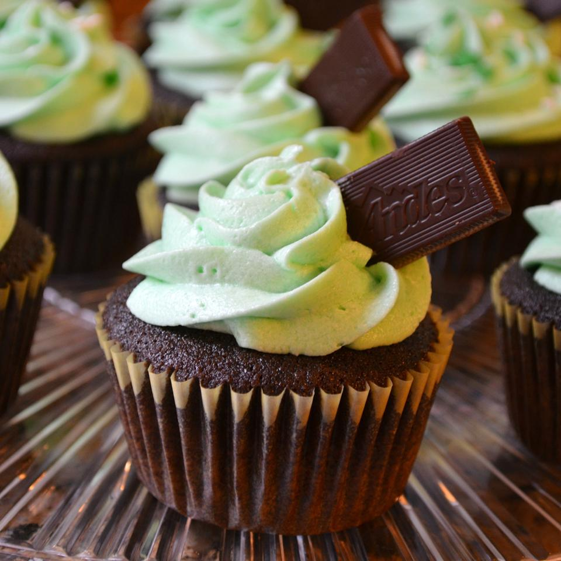

Simple 'N' Delicious Chocolate Cake

Description
A very simple to make chocolate cake that I developed while trying to combine my chocolate and coffee cravings.
It tastes so good no one will believe how easy it was! (It can be frosted with chocolate or coffee icing but I like it plain.)
Ingredients
- 1 cup white sugar
- 1116cups all-purpose flour
- 12cup unsweetened cocoa powder
- 1 teaspoon baking soda
- 1 teaspoon salt
- 12cup butter
- 1 egg
- 1 teaspoon vanilla extract
- 1 cup cold, strong, brewed coffee
Steps
- Preheat oven to 350 degrees F (175 degrees C). Grease and flour
an 8-inch pan. Sift together flour, cocoa, baking soda and salt.
Set aside.
- In a medium bowl, cream butter and sugar until light and fluffy.
Add egg and vanilla and beat well. Add flour mixture, alternating with
coffee. Beat until just incorporated.
- Bake at 350 degrees F (175 degrees C) for 35 to 45 minutes, or
until a toothpick inserted into the cake comes out clean. Allow
to cool before frosting.